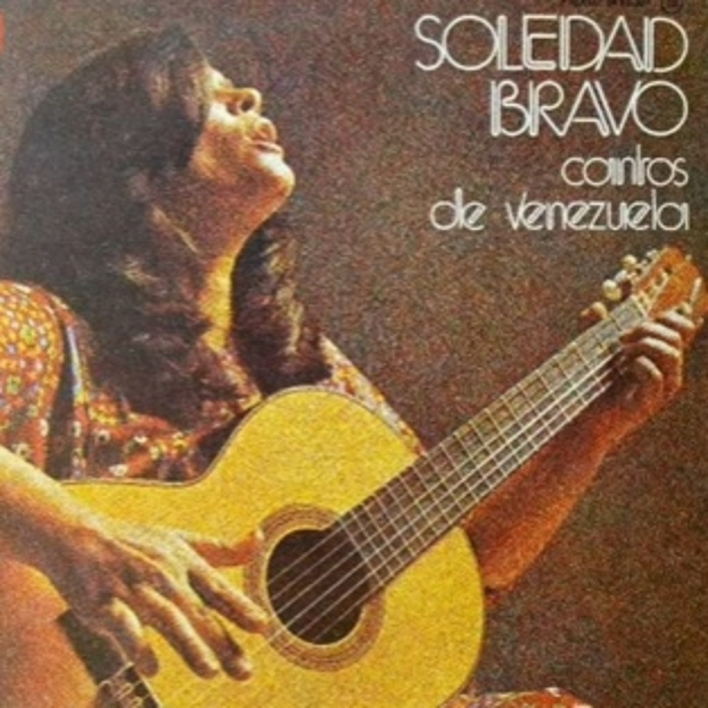

Cantos de Venezuela (1974)
Apunte 009
Inicio > Blog Bitácora de un músico > Apunte 009
Un cambio de perspectiva
Cuando Soledad Bravo grabó Cantos de Venezuela en 1974, no se estaba adentrando en terreno desconocido. Ya había explorado repertorios ibéricos, la canción latinoamericana y las redes continentales de la Nueva Canción. Lo que cambia en este álbum no es su voz, sino el marco que la rodea.
Sus grabaciones anteriores solían basarse en un formato minimalista: voz y guitarra, con un acompañamiento a veces mínimo. Aquí, el sonido se expande. El álbum está arreglado y dirigido por Chucho Sanoja, una figura profundamente arraigada en la práctica orquestal popular venezolana, más que en los contextos de interpretación rural.
Ese detalle es importante. El álbum no es una colección de canciones. Es un entorno orquestado.
Repertorio sin contexto
La lista de temas se nutre de géneros con un fuerte arraigo regional: malagueña, fulía, tonada, polo margariteño, canciones de trabajo. Cada una de estas formas tiene su propia ecología interpretativa. Están ligadas a contextos específicos: tradiciones de canto de la costa oriental, ciclos rituales afrovenezolanos, trabajo con el ganado, ritmos agrícolas...
En Cantos de Venezuela, esos contextos no desaparecen, pero ya no están tan presentes. Las canciones se desvinculan de las situaciones que las produjeron. Se reorganizan en pistas independientes, cada una delimitada por la lógica del formato LP.
El oyente no encuentra un ciclo, un ritual o un proceso laboral. Encuentra una secuencia.
Ese cambio, por sí solo, transforma la música.
El arreglista como constructor
El papel de Sanoja no es decorativo. Es estructural. Como arreglista y director musical, determina la instrumentación, la textura, el ritmo y las transiciones.
Los créditos disponibles y las evidencias auditivas muestran una lógica de conjunto mixta. Instrumentos tradicionales como el cuatro y la percusión coexisten con elementos de estudio: coros arreglados, superposición controlada y, en algunos casos, un apoyo armónico ampliado más allá de lo que requeriría una interpretación rural.
Eso no es documentación. En realidad, es selección.
Algunos timbres se conservan porque señalan una cierta "venezolanidad". Otros se introducen o estabilizan para garantizar la coherencia en todo el álbum. El resultado no es un sonido regional único, sino una composición negociada.
El estudio se convierte en un filtro que decide lo que es representativo.
Ritmo bajo restricciones
Tradicionalmente, géneros como la fulía o las canciones de trabajo suelen operar en entornos rítmicos flexibles. El tempo puede fluctuar. La participación puede alterar la densidad. Las estructuras de llamada y respuesta se expanden o contraen según la situación.
En el estudio, esta flexibilidad se reduce.
Las pistas requieren una duración determinada. Requieren cierre. Deben comenzar y terminar con claridad. Por ende, los patrones rítmicos se estabilizan. Las irregularidades se reducen mediante la disciplina en la composición y el arreglo. El pulso se vuelve más predecible, más transferible entre pistas.
Lo que antes era adaptativo se vuelve repetible.
Esto no significa que el ritmo se simplifique hasta volverse uniforme, sino que termina moldeándose para que funcione dentro de la secuencia de un álbum, en lugar de dentro de un evento en vivo.
La voz como eje central
La voz de Bravo sigue siendo la constante principal. Aporta continuidad expresiva a lo largo del variado material del álbum. Pero su papel también cambia.
En un contexto rural, la voz suele estar integrada en el sonido colectivo. En Cantos de Venezuela ocupa un lugar central. La colocación de los micrófonos, la mezcla y los arreglos aseguran que la voz lidere, mientras que el conjunto la acompaña.
Esta jerarquía no es inherente a los géneros en sí. Es una decisión de estudio.
La voz se convierte en el hilo conductor que combina tradiciones heterogéneas y las transforma en una experiencia auditiva unificada.
De la práctica a la referencia
Con el tiempo, grabaciones como Cantos de Venezuela adquieren una segunda vida. Dejan de ser simples álbumes y se convierten en puntos de referencia.
Para quienes no tienen acceso directo a los contextos de interpretación originales, la grabación se convierte en el primer contacto con estos géneros. Sus versiones de malagueña o tonada comienzan a definir expectativas. Músicos posteriores pueden aprender del disco en lugar de la práctica comunitaria.
Aquí es donde la transformación se vuelve recursiva.
El estudio no solo reinterpreta la tradición, sino que la retroalimenta. Estabiliza ciertas formas, ciertos tempos, ciertos equilibrios tímbricos, que luego circulan como si fueran originales.
El álbum se convierte en un archivo que remodela lo que preserva.
Documento o construcción
Resulta tentador leer Cantos de Venezuela como un proyecto de preservación. En cierto modo, lo es. Reúne repertorios y les da visibilidad. Pero la preservación aquí opera a través de la transformación.
El álbum no captura la música folclórica venezolana tal como existe in situ. Construye una versión que puede circular, escucharse repetidamente y reconocerse en distintos contextos.
Lo que surge no es una falsificación, sino una mediación. La tradición entra al estudio como práctica. Y sale como formato.
Lecturas
- Martín, Gloria. El perfume de una época: (la nueva canción en Venezuela). Editorial Alfa, 1998.
- Mendoza, Emilio. "Folk-Music Appropriation by Venezuelan Pop Music." Encyclopedia of Popular Music of the World, vol. 9. London: Continuum, 2008.
- Penín, José. "Música popular de masas, de medios, urbana o mesomúsica venezolana." Latin American Music Review 24 (1) (2003): 62-94.
- Tumas-Serna, Jane. "The 'Nueva Canción' Movement and Its Mass-Mediated Performance Context." Latin American Music Review 13 (2) (1992): 139-153.
Video. Del usuario de YouTube Stanislav Palekha.